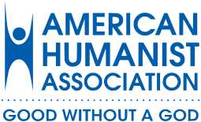
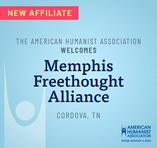

Do you crave insightful conversations that focus on the human experience? Are you wanting to discuss topics in science, society, ethics and/or the environment? Do you live in the Mid-South and wish to connect with other open-minded individuals? If so, join us!
The Memphis Freethought Alliance (MFA) is composed of freethinkers and others who focus on what it means to be human. Founded over fifteen years ago, the Memphis Freethought Alliance continues to be a beacon for those who wish to promote the advancement of education and science. It aims to do so by the following:
- Providing support and fellowship to freethinkers in the Mid-South
- Promotion of free speech and the exchange of ideas
- Providing a forum for educational films and lectures
- Defending the separation of Church and State as upheld by the Constitution
- Opposing of government sponsored religion
- Defending the teaching of scientific theories over non-scientific theories in public school
- Eliminating prejudice and discrimination
- Opposing pseudoscience, myths, misleading information in the media and beyond
- Defending the civil rights of atheists, agnostics, secular humanists, and others who do not put stock in the beliefs of the supernatural
- Seeking the betterment of society through secular humanism, science, logic, reasoning, and rational philosophical discourse
We come together at the Freethought Book Club to discuss a chosen book. We also invite speakers, view films and do more!
Join us in exploration.
What we do
Memphis Freethought Alliance hosts regular events, including the following:
- Running a weekly book club
- Hosting monthly educational events, such as invited speakers
- Facilitating a small group discussion called “Women of Freethought”
- Hosting discussions and postings on WhatsApp and Facebook
- Using Meetup.com, which is an online service for organizing meetings both online and in-person
Memphis Freethought Alliance has given MFA members access to well-known speakers within the scientific, academic, and freethought community, such as Hemant Mehta of the Friendly Atheist; Robert Webster of St. Jude who spokeabout the bird flu; Mark W. Muesse of Rhode College who discussed Hinduism; Barbara Forrest talked abouther testimony at Dover Trial (Kitzmiller et al vs Dover Area School District); Victor Stenger — who wrote a NYT Bestseller—lectured on the New Atheism; Professor Steven Mulroy taught us about separation of Church and State; Michael Collins of Rhodes College discussed evolution; and Robert Boston of American Humanist Association updated us on Church and State issues; and Ban Barker, Co-president of the Freedom From Religion Foundation talked about various important topics—just to name a few.
Since 2005, our members have also been reading and discussing books on a variety of topics. These books are recommended and voted on by our members. The book list is extensive and covers science, psychology, philosophy, religion, critical thinking, atheism, science-fiction, and even some fiction works—among other fascinating topics.
If you are interested in freethought, go to our Memphis Freethought Alliance Facebook or Meetup.com page to find out what is happening this and future weeks.
Ways to Give
Become a member!
Help to strengthen our organization. As a member you will help to support our many activities, speakers and events.
Annual Membership
Annual membership allows members to vote for board members including the President of MFA annually. Annual memberships traditionally have been our primary means for raising funds for MFA. Click on this [] PayPal link.
Monthly Payments
You can also donate monthly with $3, $5, or $10 payments. Click on this [] PayPal link.
Optionally, you can donate without becoming a member via this [] PayPal link.
AmazonSmile
Support the Memphis Freethought Alliance when you make purchases on Amazon.
When you purchase products using AmazonSmile, Amazon donates 0.5% of the sale price of eligible items to your selected charity. Go to AmazonSmile, and from the dropdown, go to the search page and enter "Memphis Freethought Alliance" to pick our charitable organization.
Associations and Affiliations
 Humanism is the belief that we can live good lives without religious or superstitious beliefs. British Humanist Association, 2003
Wear a smile and have friends; wear a scowl and have wrinkles. What do we live for if not to make the world less difficult for each other? Attributed to George Eliot